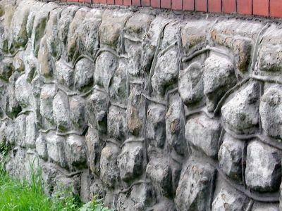

Strumień, ul. 1 Maja 9Strumień, ul. 1 Maja 9Strumień, ul. 1 Maja 9

Łaziska Średnie, ul. Pstrowskiego 17Gliwice, ul. StaromiejskaPilica, ul. 17 StyczniaMirów - ZamekKobiór, ul. Leśników 3Sosnowiec, ul. St. Staszica 8Pogórze k/SkoczowaIrządze - Kolonia KrzytniaPszczyna, Park ZamkowyRudy, ul. Raciborska 10Rybnik, ul. Mościckiego 3Radzionków, ul. Nałkowskiej 51Sosnowiec, ul. J. Kraszewskiego